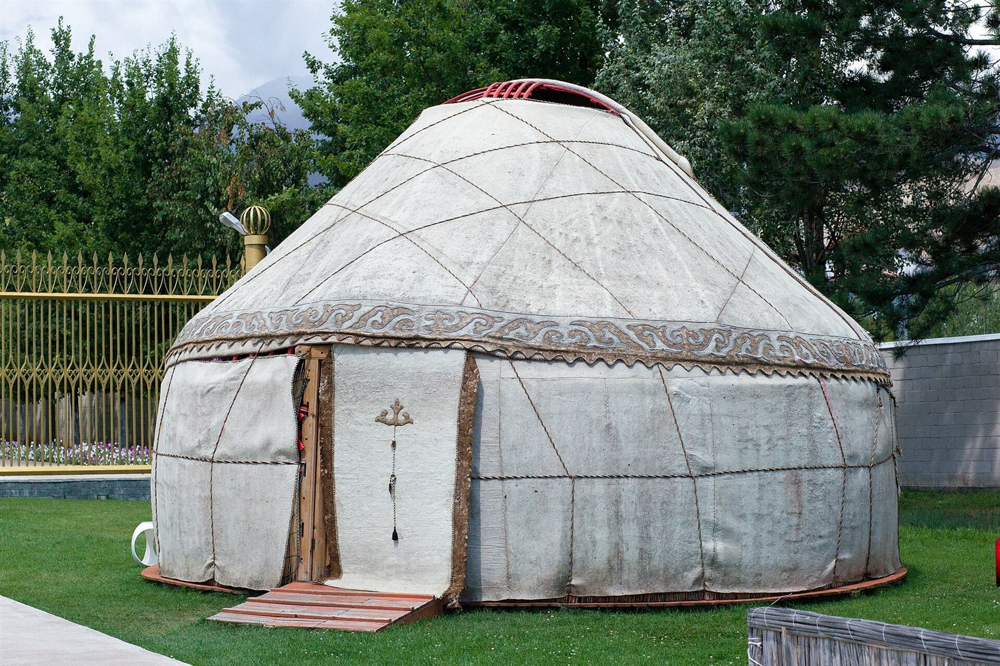
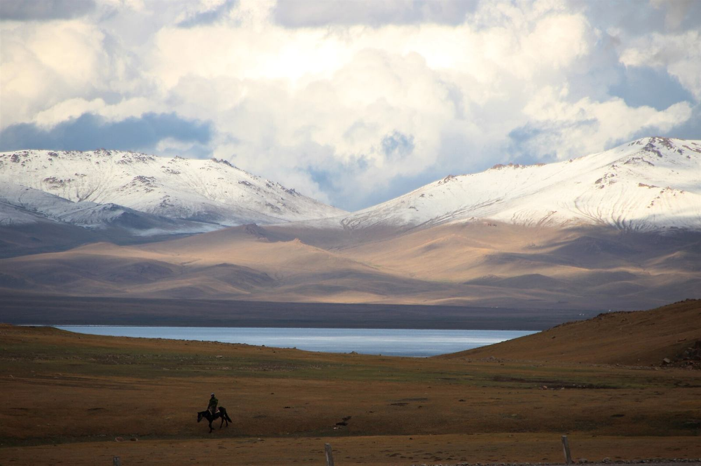

Culture & Food
A nomadic heritage that is still alive: yurts, horses, epic poetry and generous hospitality.
Nomadic traditions
The yurt (boz üy)
The portable felt home of the nomads. Its roof crown, the tunduk, is pictured in the centre of the Kyrgyz flag.
Epic of Manas
One of the longest epic poems in the world, traditionally recited from memory by storytellers called manaschi.
Eagle hunting
Berkutchi train golden eagles to hunt foxes and hares, a skill passed down through generations.
Ak-kalpak
The white felt hat worn by Kyrgyz men is a national symbol. It has its own holiday on 5 March.
Kok-boru
A fast and intense team game played on horseback. Watch it at festivals and national holidays.
Shyrdak carpets
Colourful hand-made felt carpets with traditional patterns. They make a great souvenir.
Dishes you must try
Kyrgyz cuisine is hearty, meat-based and made to share. Tea (chai) is served with every meal.
Beshbarmak
The national dish: boiled meat with hand-cut noodles and onion broth. Its name means "five fingers".
Lagman
Hand-pulled noodles with stir-fried meat and vegetables, a Dungan and Uyghur favourite.
Manty
Large steamed dumplings filled with minced meat, onion and sometimes pumpkin.
Plov
Rice cooked in a big kazan with carrots, meat and spices. In the south, Osh plov is famous.
Samsa
Flaky pastry baked in a tandoor oven with meat filling. A perfect street-food snack.
Boorsok
Fried pieces of dough served at every celebration, usually with tea, jam and cream.
Kymyz
Lightly fermented mare's milk, the traditional summer drink of the pastures. Try it in a yurt camp.
White honey
Creamy mountain honey from sainfoin flowers, one of the best souvenirs to take home.
Festivals & holidays
Persian New Year and the arrival of spring. Families cook sumolok and there are concerts and games in every town.
Regional festivals at Issyk-Kul, Song-Kul and Naryn with kok-boru, horse races and yurt displays.
Celebrations, parades and fireworks, especially on Ala-Too Square in Bishkek.
An international sports festival of nomadic games, held in Kyrgyzstan several times since 2014.
Be a respectful guest
- Take off your shoes when entering a home or yurt.
- Accept tea or bread when offered. Refusing can seem impolite.
- Never put bread on the floor or turn it upside down.
- Ask before photographing people, especially women and elders.
- Dress modestly when visiting mosques and in rural areas.
- Greet elders first, and use your right hand to give or receive things.

